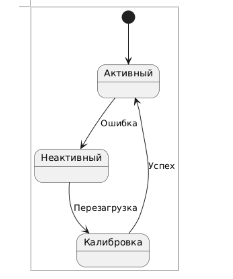

Документация проекта
Среднее состояние воздуха за последние 10 дней:
Загрузка...
Статистика качества воздуха
| Город | Средний PM2.5 | Макс. PM2.5 | Темп. | Влажн. |
|---|
PM2.5: Частицы диаметром ≤2.5 микрон
Норма: ≤25 μg/m³ (ВОЗ)
Норма: ≤25 μg/m³ (ВОЗ)
- Создание централизованной системы для сбора и анализа данных о качестве воздуха из различных источников.
- Разработка инструментов прогнозирования для предсказания изменений в качестве воздуха на основе исторических данных и метеорологических факторов.
- Повышение осведомленности о состоянии окружающей среды и загрязнении воздуха.
- Обеспечение доступности информации о качестве воздуха (например через мобильное приложение)
- Улучшение качества воздуха на основе полученных данных и прогнозов.
- Разработка архитектуры системы
- Создание интерфейсов для сбора данных
- Разработка алгоритмов машинного обучения
- Интерактивные визуализации
- Система уведомлений
- Генерация отчетов
- Тестирование и отладка системы
- Интерфейсы для интеграции с сенсорами и системами мониторинга
- Алгоритмы машинного обучения для предсказания качества воздуха
- Карты и графики, отображающие данные о качестве воздуха
- Уведомления о превышении допустимых норм загрязнения
- Определить возможности для монетизации, например, через подписку или платные отчеты
- Анализ затрат на разработку и поддержку платформы
- Изучение ценовых моделей похожих проектов для определения конкурентоспособной цены
- Обеспечить доступ к платформе через веб-интерфейс и мобильные приложения
- Обеспечить совместимость с существующими системами и платформами
- Разработка стратегии продвижения платформы среди целевых пользователей
- Проведение семинаров и вебинаров для демонстрации функционала системы
- Разработка образовательных материалов о важности мониторинга качества воздуха
- Установление сотрудничества с экологическими организациями для распространения информации о платформе
- Бекенд: Python (Django/FastAPI), Celery для асинхронных задач
- ML: TensorFlow/PyTorch, Scikit-learn, библиотеки для анализа временных рядов (Prophet)
- Базы данных: PostgreSQL (основная БД), Redis (кеширование), TimescaleDB (для временных рядов)
- Фронтенд: React (веб), React Native (мобильное приложение)
- Инфраструктура: Docker/Kubernetes, облачные сервисы (AWS/GCP)
- Интеграция разнородных данных: Возможность объединять данные с сенсоров, метеорологических служб и открытых источников, что повышает точность анализа
- Использование ML и AI: Прогнозирование на основе машинного обучения позволяет предсказывать загрязнение с учетом динамических факторов (погода, время суток)
- Доступность информации: Мультиплатформенность (мобильное приложение, веб-дашборды) обеспечивает широкий охват аудитории
- Экологическая направленность: Проект решает социально значимую проблему, что повышает его привлекательность для грантов и партнерств
- Масштабируемость архитектуры: Использование облачных технологий (AWS/GCP) и микросервисов позволяет легко расширять функционал
- Зависимость от качества данных: Неточности в показаниях сенсоров или их временная недоступность могут снижать точность прогнозов
- Высокие начальные затраты: Развертывание инфраструктуры, разработка ML-моделей и поддержка датчиков требуют значительных инвестиций
- Сложность интеграции: Подключение к разнородным источникам данных (государственные, коммерческие) может быть бюрократически сложным
- Конкуренция за внимание пользователей: Низкая осведомленность о проблеме загрязнения воздуха в некоторых регионах может замедлить рост аудитории
- Партнерства с государством и бизнесом: Внедрение платформы в городские системы экологического мониторинга (например, в рамках "умных городов")
- Экспансия на новые регионы: Расширение географии охвата за счет подключения сенсоров из других стран
- Монетизация через B2B и B2G: Продажа аналитики и прогнозов транспортным компаниям, заводам или муниципалитетам
- Развитие персональных рекомендаций: Интеграция с устройствами IoT (например, умные дома) для автоматической настройки вентиляции или уведомлений
- Повышение экологической грамотности: Образовательные инициативы (вебинары, отчеты) для школ и университетов
- Конкуренция с крупными платформами: Риск вытеснения проектами вроде AirVisual или BreezoMeter, которые уже имеют глобальную аудиторию
- Регуляторные ограничения: Проблемы с доступом к данным в странах с жесткими законами о конфиденциальности или экологической отчетности
- Технические сбои: Кибератаки, утечки данных или поломки сенсоров могут подорвать доверие пользователей
- Изменения климатической политики: Снижение финансирования экологических инициатив в случае политических или экономических кризисов
- Ошибки в прогнозах: Неточности ML-моделей (например, из-за редких погодных аномалий) могут привести к потере репутации
- Слой данных: Сенсоры → API-шлюзы → БД (сырые данные)
- Слой обработки: ETL-пайплайны (Apache Airflow) → ML-модели → Прогнозы
- Слой представления: Веб-приложение + мобильное приложение + REST API
- Проектирование: 2 мес Спецификация требований, выбор технологий, проектирование архитектуры
- Разработка MVP: 4 мес Реализация базового функционала (сбор данных, прогнозирование, мобильное приложение)
- Тестирование: 1 мес Load-тесты, проверка точности ML-моделей, исправление багов
- Внедрение: 1 мес Публикация в App Store/Google Play, развертывание на облаке
- Поддержка: Постоянно Мониторинг, обновление моделей, добавление новых функций.
- Разработка: $150 000 (команда из 5 человек: бекенд, фронтенд, ML-инженер, QA, DevOps)
- Инфраструктура: $20 000/год (облачные сервисы, хранение данных)
- Маркетинг: $10 000 (продвижение приложения, партнерства с эко-организациями)
- Низкая точность прогнозов: Регулярное обновление ML-моделей, добавление новых фичей
- Сбои в работе сенсоров: Резервирование данных, использование открытых источников как fallback
- Конкуренция: Акцент на уникальность (гибкие прогнозы, интеграция с городскими службами)

-
Определяет структуру данных, атрибуты, методы и отношения между сущностями
-
Показывает, из каких крупных модулей состоит система и как они взаимодействуют
-
Указывает, где физически размещаются компоненты и как они связаны сетью
-
Раскрывает внутреннее устройство сложных компонентов
-
Иллюстрирует конкретные экземпляры классов, помогая тестировать сценарии
-
Организует классы и компоненты в логические группы упрощая управление кодом
-
Отслеживает изменения состояния объекта во времени
-
Даёт высокоуровневый взгляд на сложные процессы
-
Акцентирует связи между объектами в рамках сценария
-
Диаграмма состояний моделирует состояния объекта и переходы между ними

-
Диаграмма состояний моделирует состояния объекта и переходы между ними
-
Детализирует порядок взаимодействия объектов
-
Диаграмма деятельности моделирует рабочий процесс.